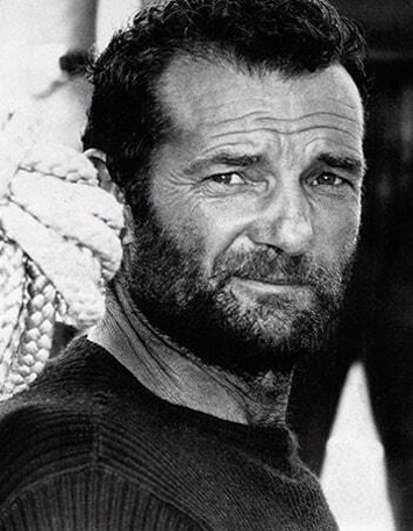
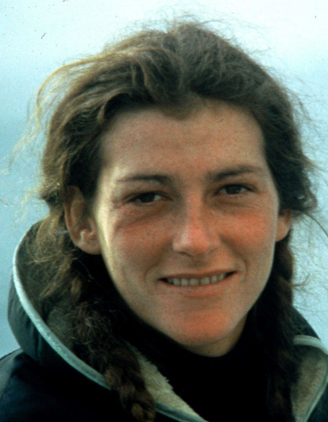
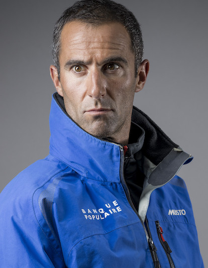
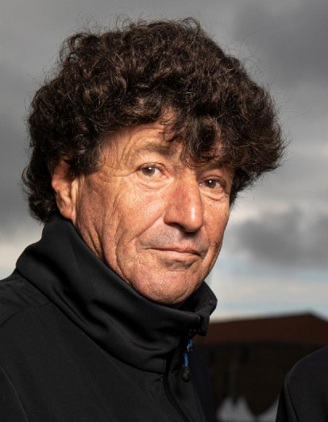
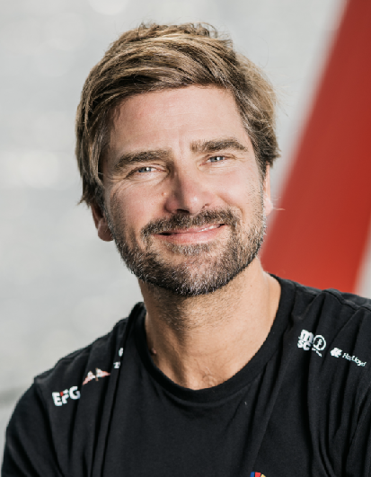

Éric Tabarly

Éric Tabarly est un grand navigateur français né à Nantes, qui a vécu entre juillet 1931 et juin 1998. Il est mort le 13 juin 1998 en mer d'Irlande après être tombé à l'eau. Éric Tabarly était officer de marine nationale au grade de capitaine de vaisseau. Il a toujours eu un grand intérêt pour la voile et est une personne influente dans le monde de la voile. Éric Tabarly a entrainé de nombreux grands skippers à la course au large. Il a participé activement à l'innovation et la conception de plusieurs voiliers de compétition. Tabarly a remporté de nombreuses régattes à bord de son bateau le Pen Duick. Il a aussi participé à la création de la Route du Rhum.
Florence Arthaud

Florence Arthaud, surnommée la Fiancée de l'Atlantique après avoir gagné la Route du Rhum en 1990, est née en octobre 1957 et est décédée dans un accident d'hélicoptère en Argentine lors d'un tournage de l'émission de télévision Dropped. Dès toute petite, FLorence Arthaud a cotoyé des grands navigateurs tels que Bernard Moitessier ou Eric Tabarly dont Jacques Arthaud, son père, éditait les récits (Editions Arthaud). Florence a ensuite pu naviguer avec de grands noms : Eric Tabarly, Bruno Peyron, Olivier de Kersauson, Philippe et Luc Poupon... C'est la première femme qui a pu rentrer dans la cour des grands navigateurs français en participant à de nombreuses grandes courses : Route du Rhum, Solitaire du Figaro, Transpacifique, transat en double... Elle a participé à la première édition de la Route du Rhum en 1978 et en 1986, elle s'est déroutée pour porter secours à Loïc Caradec : malheureusement elle retrouvera le catamaran mais sans marin. Elle-même aura connu un naufrage en octobre 2011 au large de la Corse dont elle aura pu être sauvée grâce à la géolocalisation et à un hélitreuillage alors qu'elle était en hypothermie.
Armel Le Cléac'h

Armel le Cléach est un skipper français qui est particulierement connu pour avoir battu le record en 2017 de la célèbre et mytique compétition, le Vendée Globe. Il a réussi à faire le tour du monde à la voile en seulement 74 jours, 3 heures et 35 minutes à bord de son bateau Banque Populaire VIII. Il est le premier navigateur à avoir été trois fois sur le podium du Vendée Globe, 2 fois à le deuxième place et une fois vainqueur où il a battu le record. Armel Le Cléac'h a un très grand palmares, il a notamment remporté à trois reprises, la Solitiare du Figaro.
Jean Le Cam

Jean le Cam, est né en 1959 à Quimper. Il a effectué son service millitaire dans l'équipage d'Éric Tabrly.
Il est aussi connu sous son surnom : "Le roi Jean".
Il est surnommé ainsi grâce à ses importantes victoires. Il n'y a pas longtemps, en 2020, à l'âge de 61 ans, il a participé à son cinquième Vendée Globe,
durant lequel il a sauvé le skipper Kevin Escofier qui a subi une importante voie d'eau sur son bateau qui a coulé. Puisque Kevin Escoffier a été récupéré par Jean Le Cam, ils ont donc été à deux pendant quelques jours sur le bateau jusqu'à ce que la marine récupère Kevin Escoffier.
Jean le Cam, a eu un édi-temps pour le sauvetage et a néanmoins décroché la 4ème place de la course. Il a été acclamé lors de son arrivée aux Sables d'Olonne.
Boris Hermann

Boris Hermann est un navigateur allemand. Il a participé au Vendée Globe 2020-2021 à la 5ème place. Il se préoccupe beaucoup du développemnt durable et de l'écologie, c'est pourquoi lors du Vendée Globe,sur son bateau Seaexplorer, il a emmmené un appareil pour analyser la pollution des Océans. En Août 2019, il a traversé l'Atlantique, de Pylmouth jusqu'à New York, avec à bord la militante écologiste, Greta Thunberg.